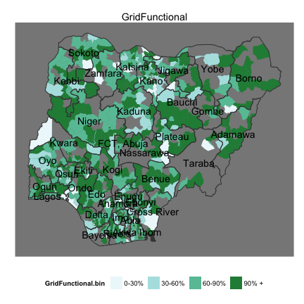
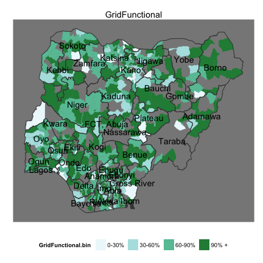
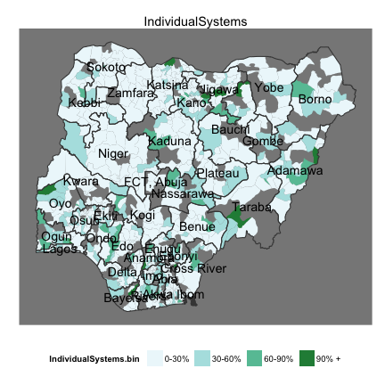
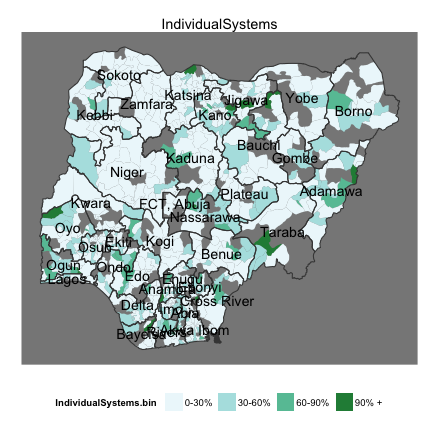
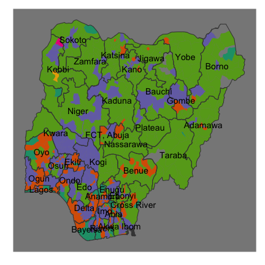
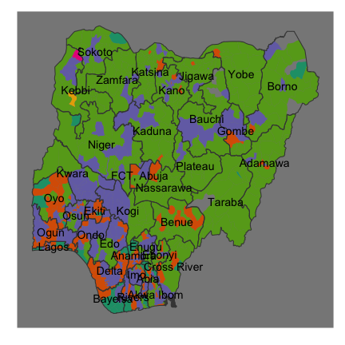
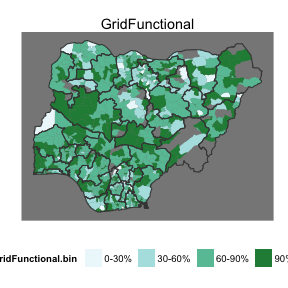
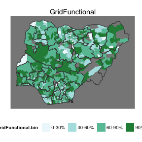

- Grid data from localities survey
- Grid vs. solar vs. generator data from health + education surveys
- Katsina -- example of detailed demand analysis
NMIS Energy Data Overview
Data Team, Modi Research Group
Outline
Localities survey -- landscape of the data

What % of localities have grid?


What % of households have grid?


What % of localities say the grid is functional?
 

What is the major problem with the grid?
Left: issues by locality, by zone. Right: Majority problem for LGA.
Error: object 'bar' not found


Use of back-up / "individual home" systems
 

2. Surveys at Health and Education Facilities
What % use ...


Which electric system is dominant?


What is functional?
 
 


Functional Power


 
